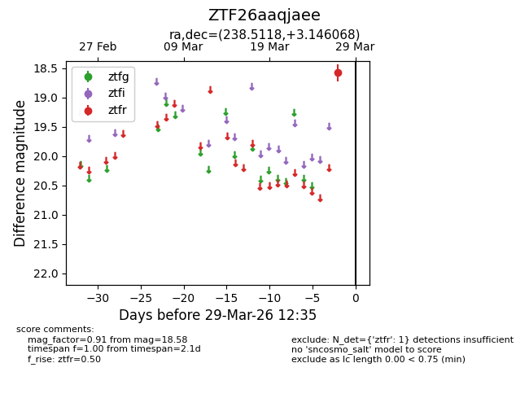
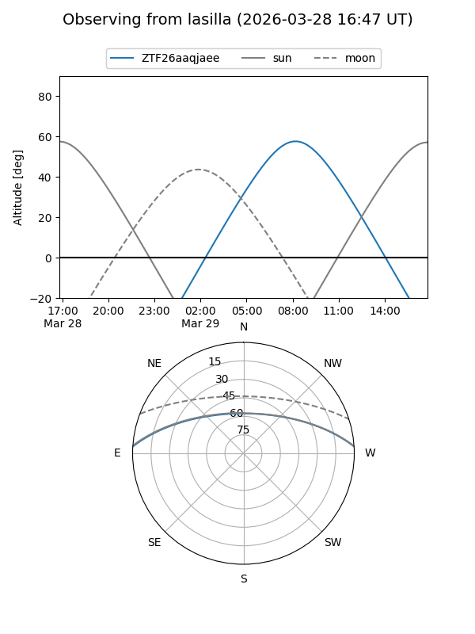
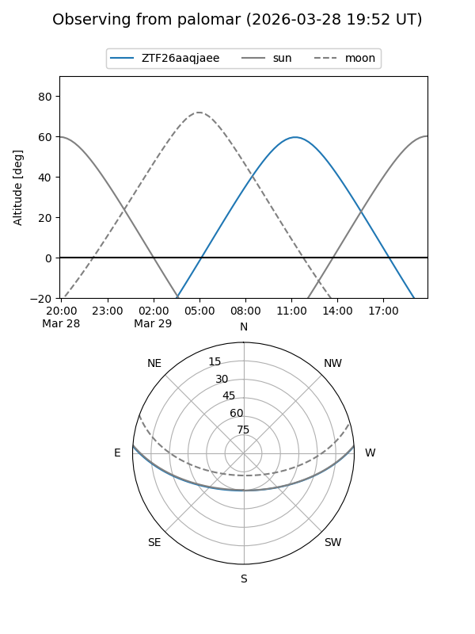

ZTF26aaqjaee
Target ZTF26aaqjaee at 2026-03-29 12:38
Aliases and brokers:
FINK: link
Lasair: link
ALeRCE: link
alt names
ZTF26aaqjaee (ztf,fink_ztf)
Coordinates:
equatorial (ra, dec) = 238.5118,+3.14607
equatorial (HMS+DMS) = 15:54:02.83,+03:08:45.85
galactic (l, b) = (12.2599,+40.25560)
Flags:
Photometry:
last ztfr=18.58
1 ztfr detections
Lightcurve

Visibility


Additional plots